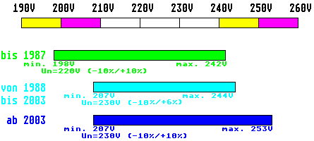

Previous
Next
TOC
Die Anhebung der Netzspannung von 220 auf 230 Volt
Hier beschäftigen wir uns mal mit dem Stromlieferanten unseres lieben
grauen Computergetiers. Auch die Bauteilekomponenten der Netzteile
unterliegen einem Alterungsverschleiß, nur kommt bei einigen Netz-
teilen noch ein anderer Faktor für das manchmal doch rest lästige und
unerwartete aussetzen hinzu - nämlich die Umstellung der Netzspannung
im Öffentlichen Stromnetz - dies betrifft zunehmend die Komponenten
der Computeranlage (z.b. 1040STF Computer aus der ersten Serie von
1986, Festplatte SH204 und SH205, etc.) die vor dem 01. Januar 1987
in den Verkauf kamen. Bei diesen Geräten geht durch die langsame
Umstellung aber auch durch Bauteilealterung bevorzugt der Gleich-
richter auf der Eingangsseite kaputt.
Irgendwann in den 80er Jahren setzten sich ein paar Herren an einen
Tisch und brachten die Europäische Stromversorgung ins Spiel, mit der
absicht Länderübergreifend das ganze mal auf einen Nenner zu bringen
und sich auf eine Nennspannung von 230 Volt und eine Nennfrequenz von
50Hz zu einigen.
Ein kurzer Auszug aus der DIN
IEC 38 zu diesem Thema:
Die Netzspannung der vorhandenen 220V/380V Wechselspannung und
240V/415V Wechselspannung soll auf einen gemeinsamen Nenner von
230V/400V Wechselspannung gebracht werden.
Die Übergangszeit soll Europaweit so kurz wie möglich sein und soll
die Dauer von 20 Jahren nach der Veröffentlichung dieser
IEC-Norm
nicht überschreiten. Während dieser Zeit sollen als erstes die
Energieversorgungsunternehmen der angeschlossenen Länder welche eine
Nennspannung von 220V/380V besitzen, die Spannungstolereanzen auf
230V/400V (-10%/+6%) bringen. Die anderen beteiligten Länder die eine
Nennspannung von 240V/415V besitzen, sollen die Spannungstoleranzen
auf 230V (+10%/-6%) bringen.
Am Ende dieser Übergangsperiode sollen die Spannungstoleranzen von
230V/400V (+10%/-10%) erreicht sein. Danach wird eine Verkleinerung
dieser Toleranzen in Erwägung gezogen.
Und als Grafik sieht das dann so aus:

Durch das anheben der Versorgungsspannung von 220V auf 230V wird auch
die Scheitelspannung erhöht. Dadurch liegt die Scheitelspannung nun
sehr knapp im Bereich der maximalen Spitzensperrspannung des Gleich-
richters (meist bei 350 Volt und gerade bei den sehr alten Netzteilen
geht dann der Gleichrichter in die Jagdgründe der Ewigkeit).
Kapitel Die anhebung der Netzspannung von 220 auf 230 Volt, Seite 1